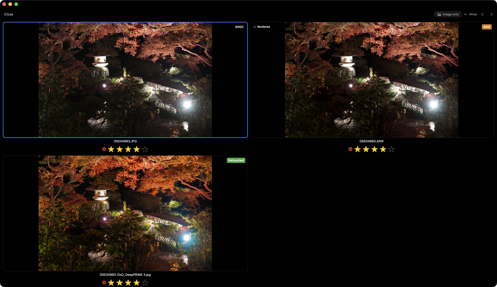
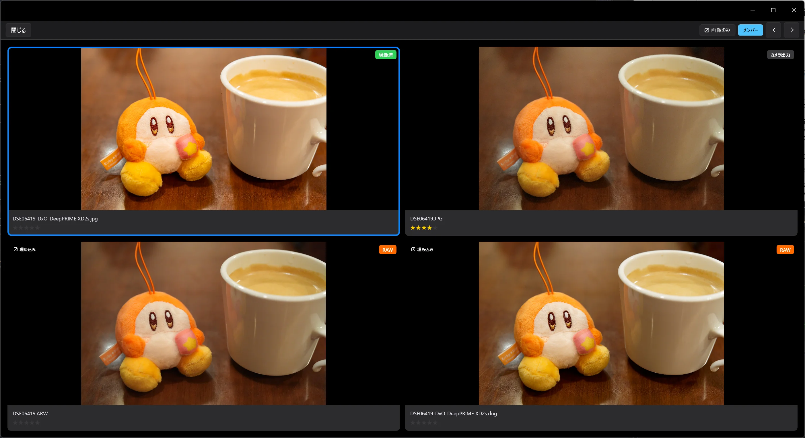
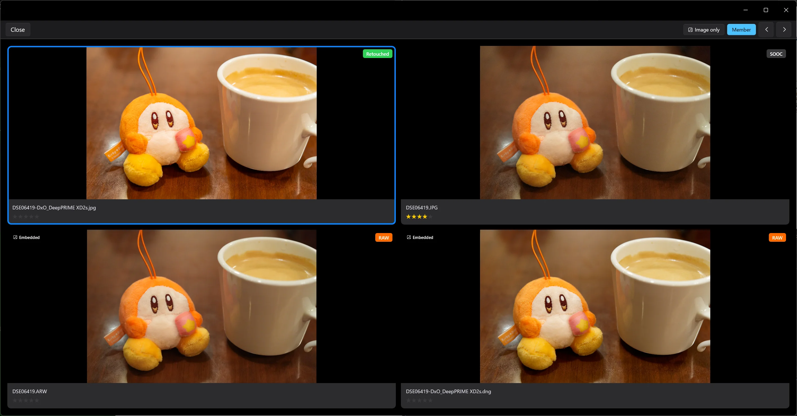
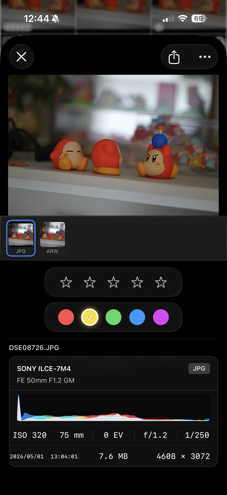
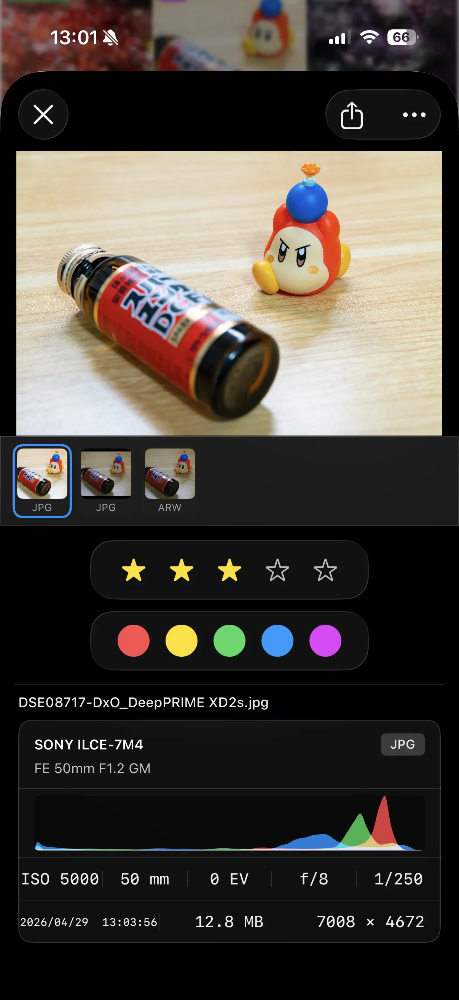
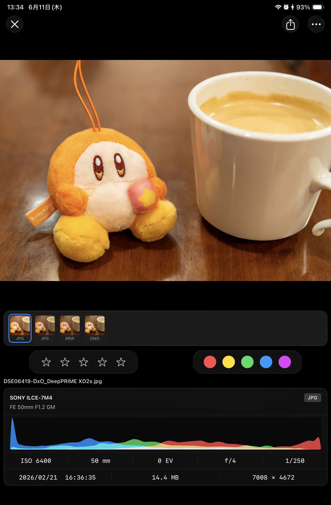
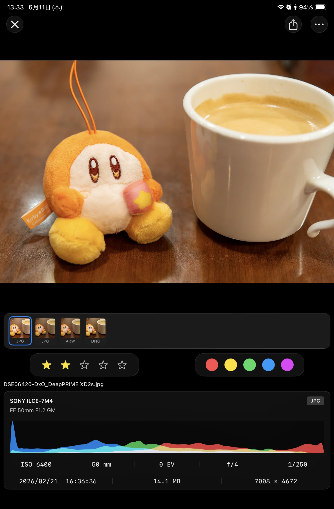
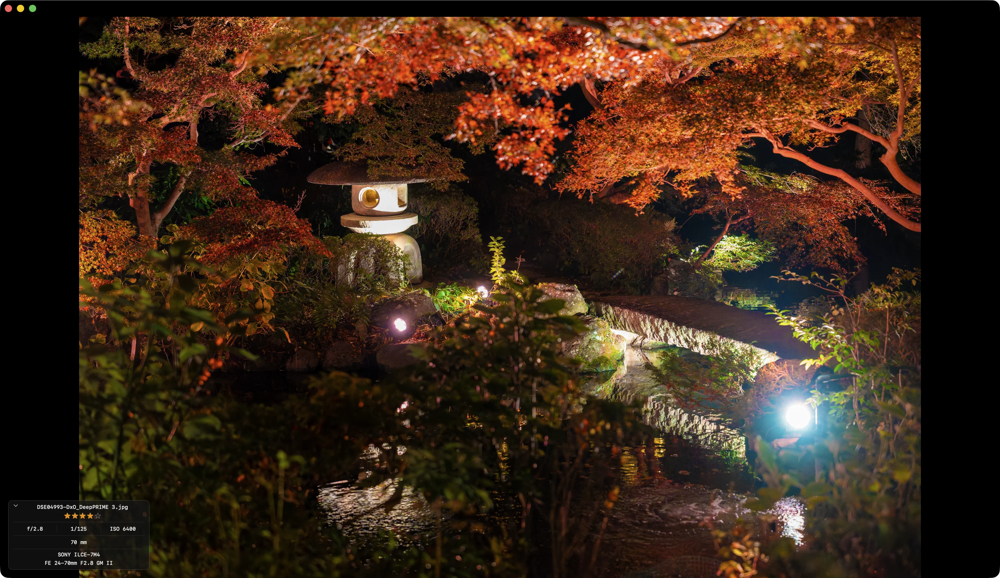
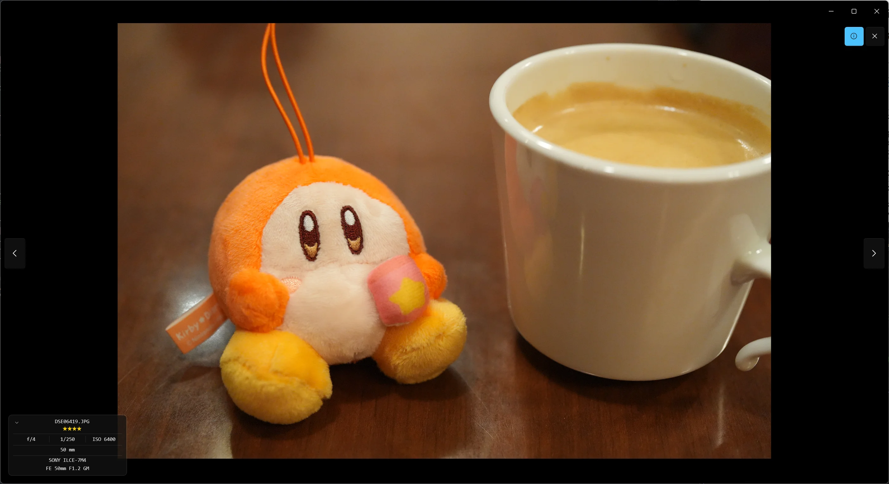
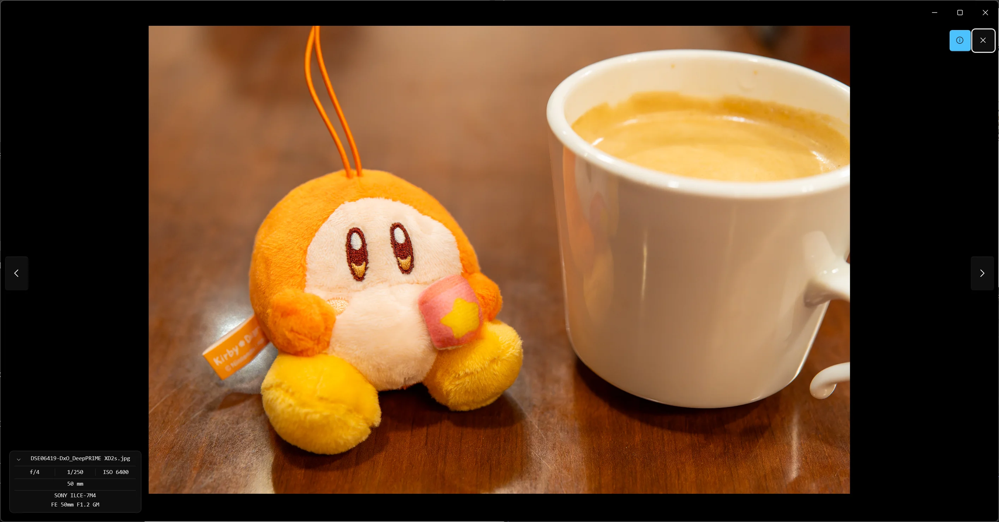

In a folder of camera JPEGs, RAWs, and developed files, bridge-lite tracks which files have been developed and what ratings they carry — your current position in the workflow.
Developed isn't always the right answer. Sometimes the camera JPEG is simply better, and sometimes repeated edits make you lose track of where you started. BridgeLite treats all three stages as one group.
Mac

Windows


iPhone


iPad


閲覧・評価・比較
Browse. Evaluate. Compare.
写真の整理に集中。
Focus on organizing your photos.
BridgeLite がやることは——写真を見る、評価する、比べるの3つだけです。現像やレタッチなどは、いつも使っているツールをご活用ください。評価はキーボードショートカットで高速に行えるので、大量の写真でもサクサク進みます。0〜5 星の評価は XMP サイドカーに書き込まれるため、Lightroom や Capture One にそのまま引き継げます。
BridgeLite does just three things: browse, evaluate, and compare. For developing and retouching, keep using the tools you already know. Keyboard shortcuts let you rate photos quickly, so even large batches stay manageable. Ratings (0–5 stars) are written to XMP sidecars and carry over to Lightroom or Capture One as-is.
Mac

Windows


iPhone
iPad
フィルタリング
Filtering
見たい写真だけを、瞬時に。
Surface just the photos you want.
評価・ファイル種別（撮って出し／RAW／現像済み）・カメラやレンズ、さらに ISO・シャッター速度・絞りまで、豊富な条件で写真を絞り込めます。膨大なフォルダの中から「星3つ以上の RAW だけ」「あのレンズで撮った数枚」を、すぐに見つけ出せます。絞り込んだ写真はそのまま書き出して、クライアントや仲間に共有したり、Lightroom などの後続の現像・編集ワークフローへスムーズに引き渡せます。
Filter by rating, file type (camera JPEG / RAW / developed), camera and lens — even ISO, shutter speed, and aperture. From a huge folder, instantly narrow down to "RAW files rated three stars and up" or "the few shots from that one lens." From there, the filtered set can be exported to share with clients or collaborators, or handed straight to Lightroom and the rest of your editing workflow.
BridgeLite is a personal project. Delivering the best experience means using platform-native UI frameworks — SwiftUI on Mac, WinUI 3 on Windows. The core functionality is built in Rust and shared across both, so you get the same processing quality on either platform.